Regression comparison
Download resultsDataset
Training setting
Repulsion weight
Repulsion location
Compare repulsion locations
Method
Random points redraw every step and exclude all training inputs. Training and random use B points; combined uses 2B. Prediction axes match within each DE or BDKN row.
Functional repulsion
BetterWorse · relative rank within each column
DE
| Repulsion inputs | RMSE | NLL | Training seconds |
|---|---|---|---|
| Training | 61.60317 | 13.99171 | 0.47 |
| Random | 61.38707 | 13.94178 | 0.48 |
| Training + random | 61.38892 | 13.94414 | 0.43 |
BDKN
| Repulsion inputs | RMSE | NLL | Training seconds |
|---|---|---|---|
| Training | 60.89667 | 9.73587 | 0.60 |
| Random | 60.21435 | 9.52915 | 0.62 |
| Training + random | 60.34560 | 9.55426 | 0.56 |
Stage 1 · total loss and data fit
Repulsion loss R only
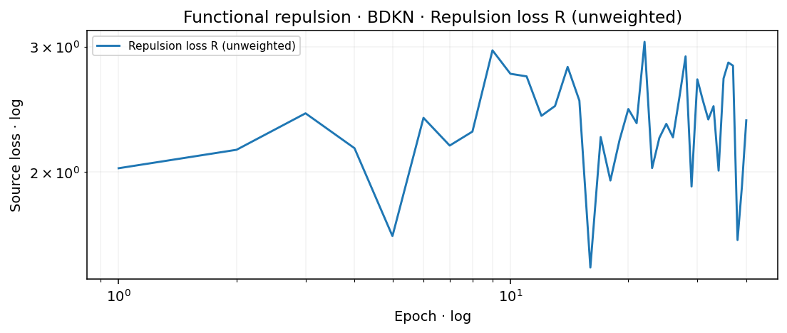
X: log · Y: log
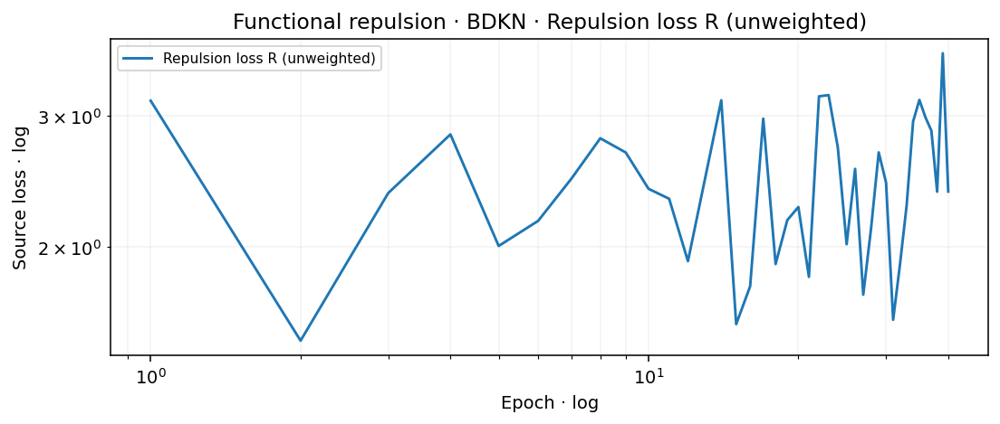
X: log · Y: log
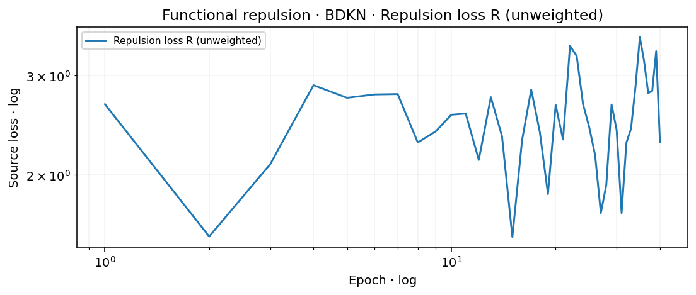
X: log · Y: log
Stage 2 · Bayesian marginal NLL
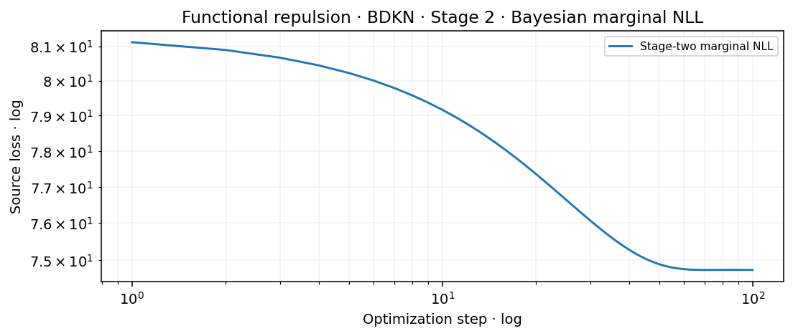
X: log · Y: log
X: log · Y: log
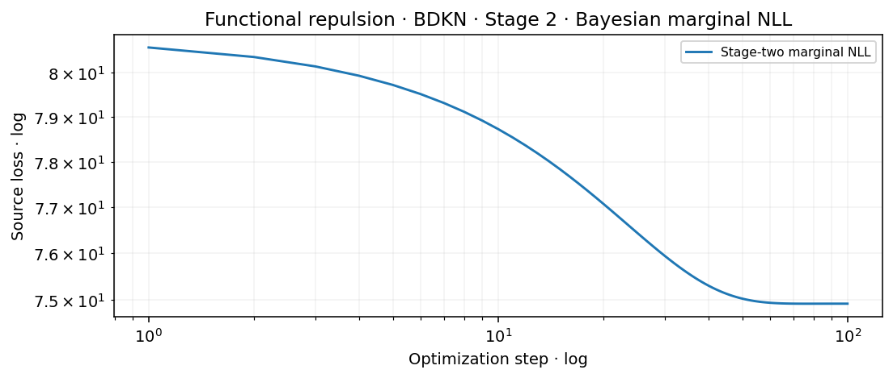
X: log · Y: log
First-order repulsion
BetterWorse · relative rank within each column
DE
| Repulsion inputs | RMSE | NLL | Training seconds |
|---|---|---|---|
| Training | 62.33381 | 14.27042 | 0.60 |
| Random | 61.02941 | 13.39207 | 0.61 |
| Training + random | 61.39616 | 13.00840 | 0.59 |
BDKN
| Repulsion inputs | RMSE | NLL | Training seconds |
|---|---|---|---|
| Training | 59.94559 | 9.71793 | 0.73 |
| Random | 60.46367 | 9.39898 | 0.77 |
| Training + random | 61.48735 | 9.26398 | 0.74 |
Stage 1 · total loss and data fit
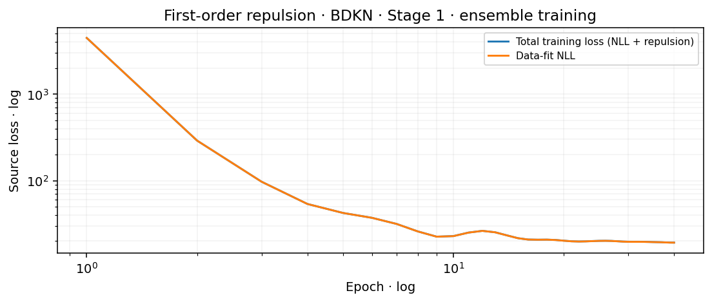
X: log · Y: log
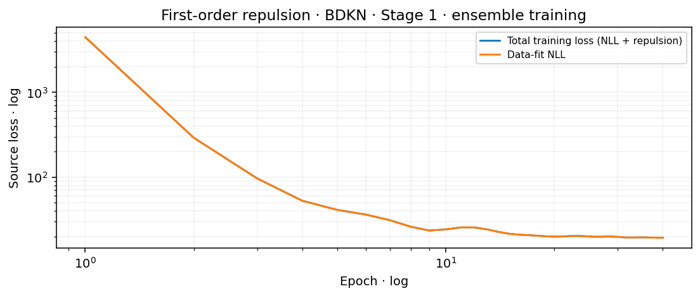
X: log · Y: log
X: log · Y: log
Repulsion loss R only
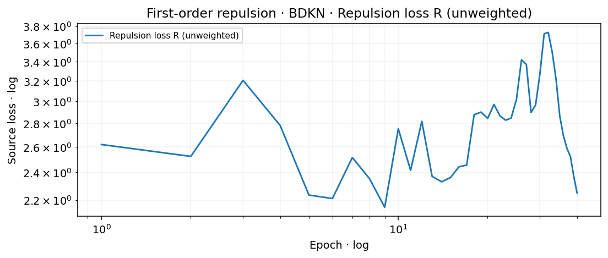
X: log · Y: log
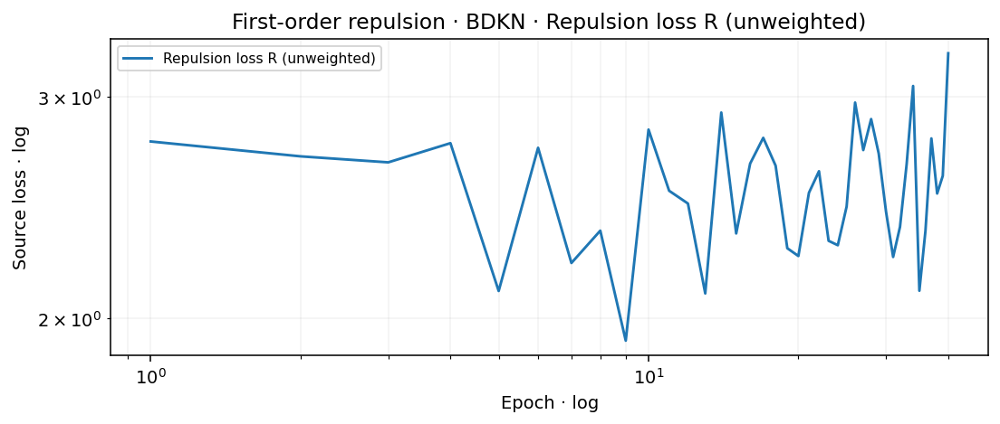
X: log · Y: log
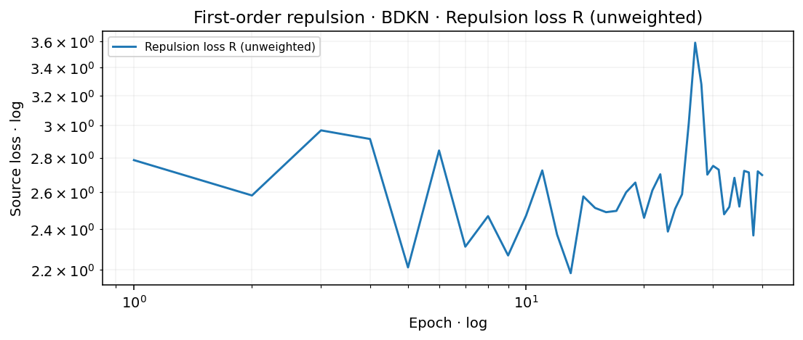
X: log · Y: log
Stage 2 · Bayesian marginal NLL
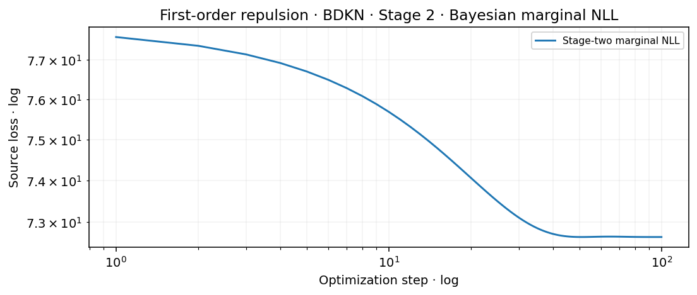
X: log · Y: log
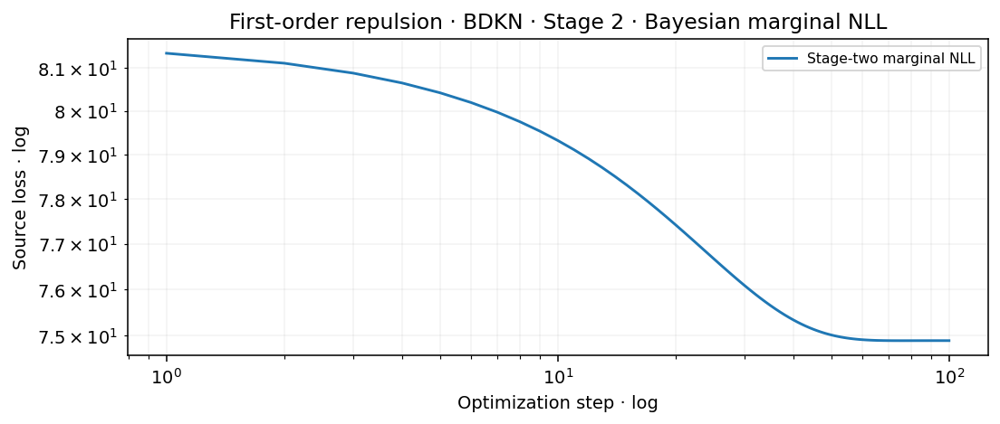
X: log · Y: log
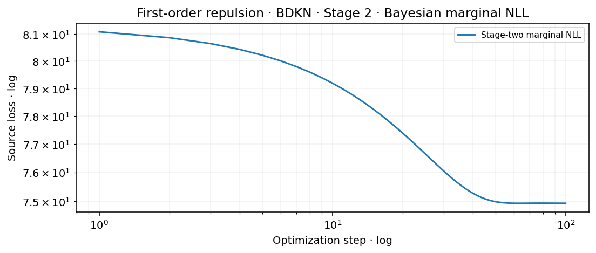
X: log · Y: log
Weight repulsion · location-independent
The loss compares network parameters directly. These same results apply to every location.
| Stage | RMSE | NLL | Training seconds |
|---|---|---|---|
| DE | 58.87706 | 5.88983 | 0.42 |
| BDKN | 56.03196 | 4.76621 | 0.56 |
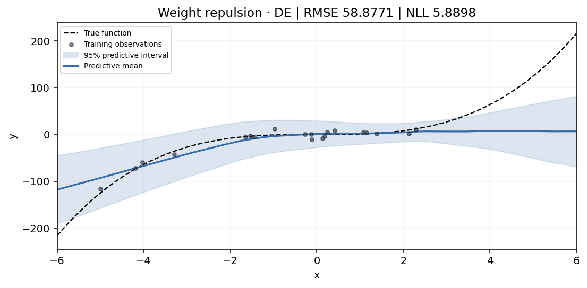